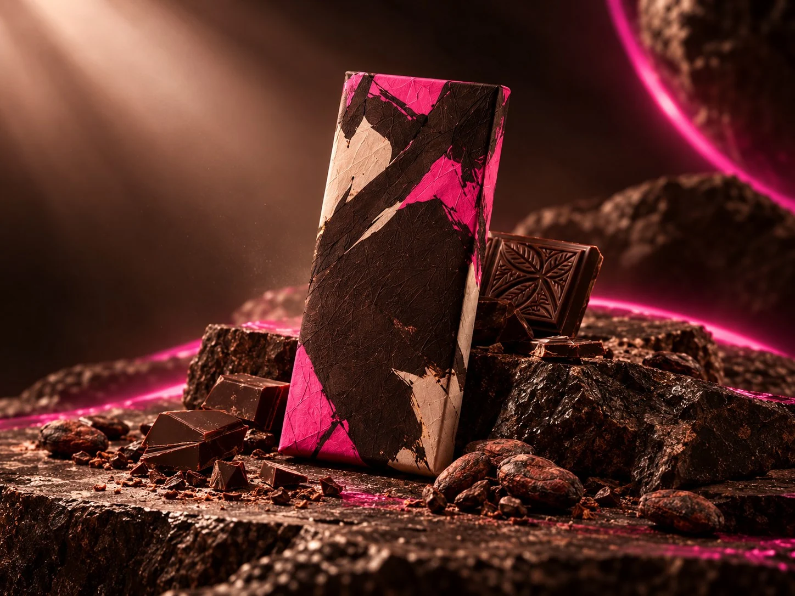
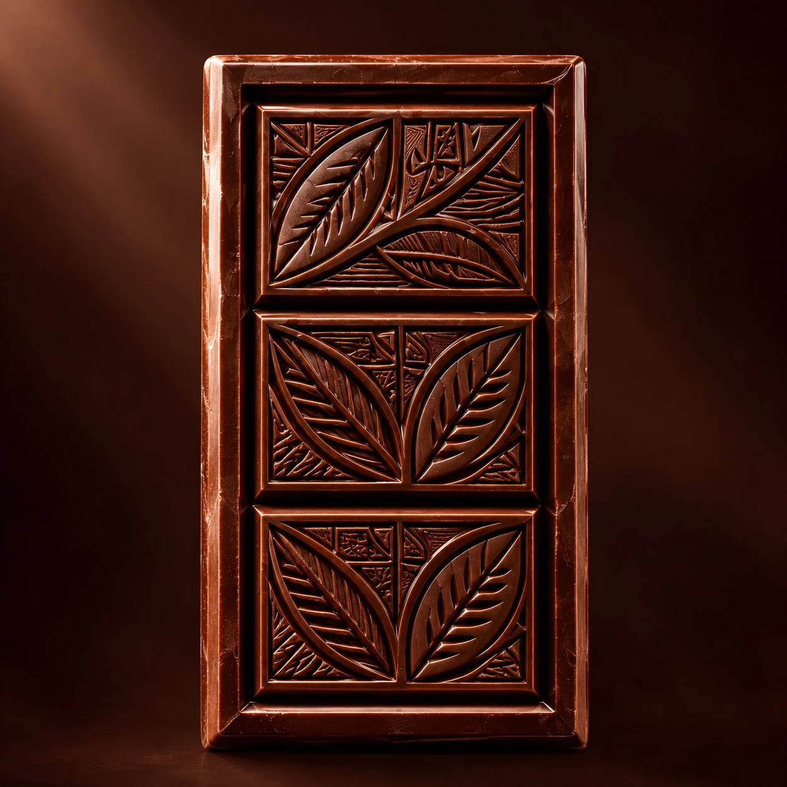
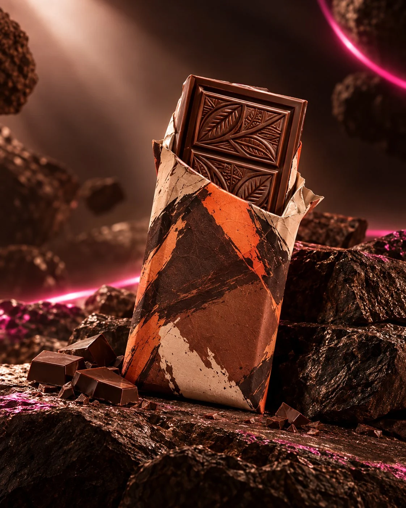
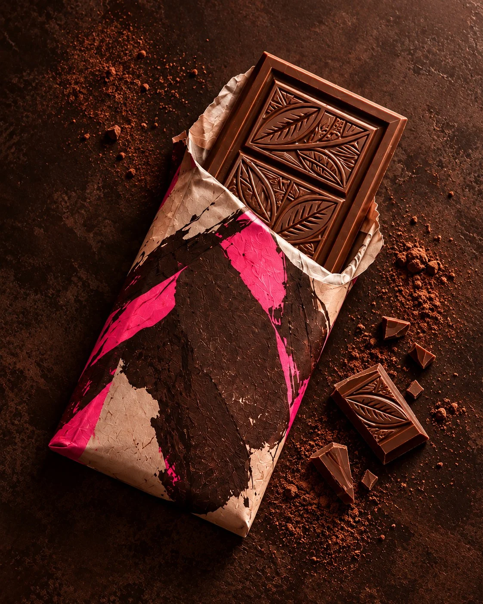
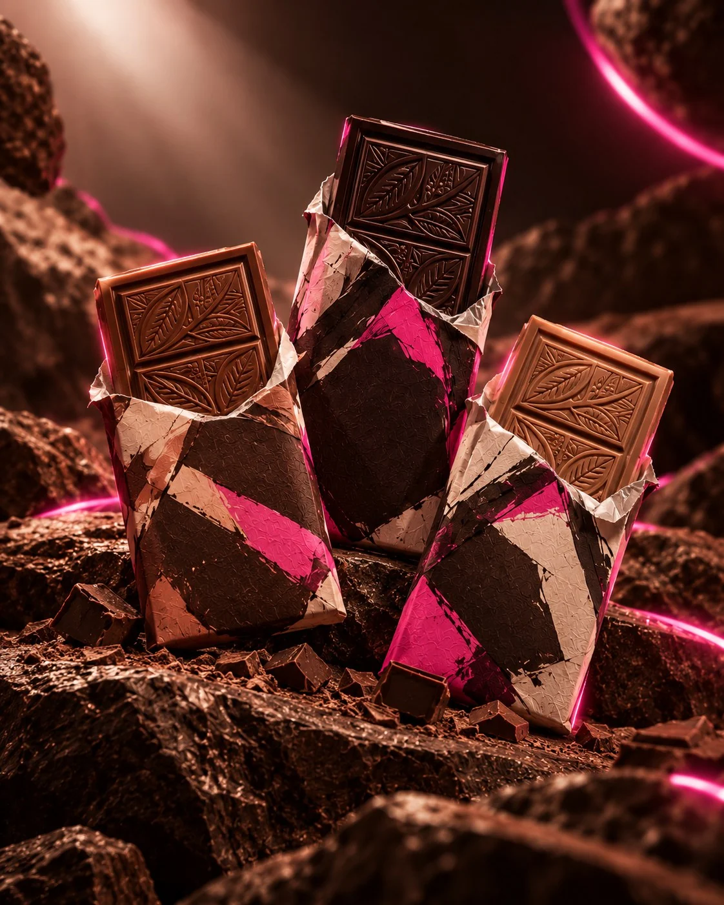
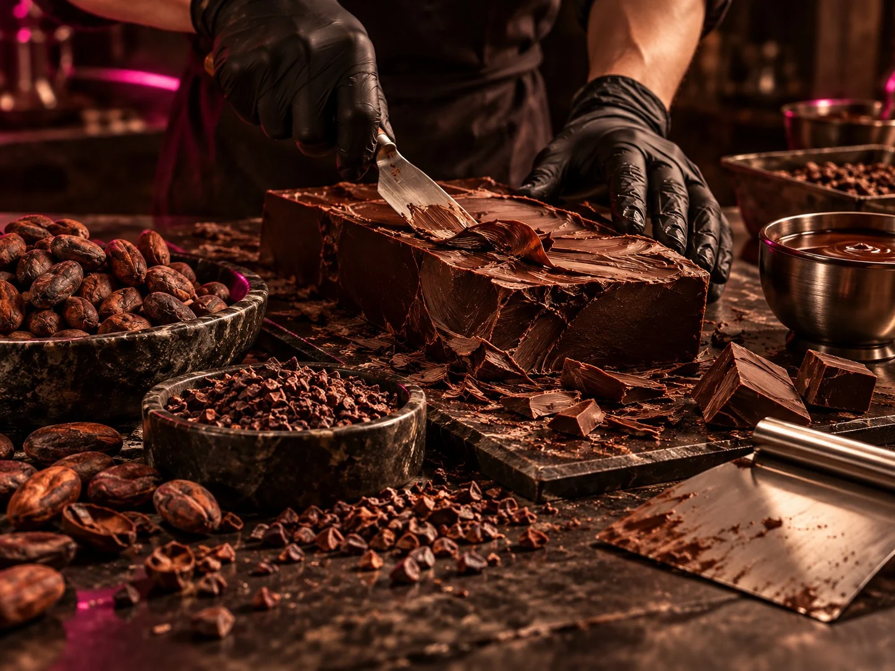
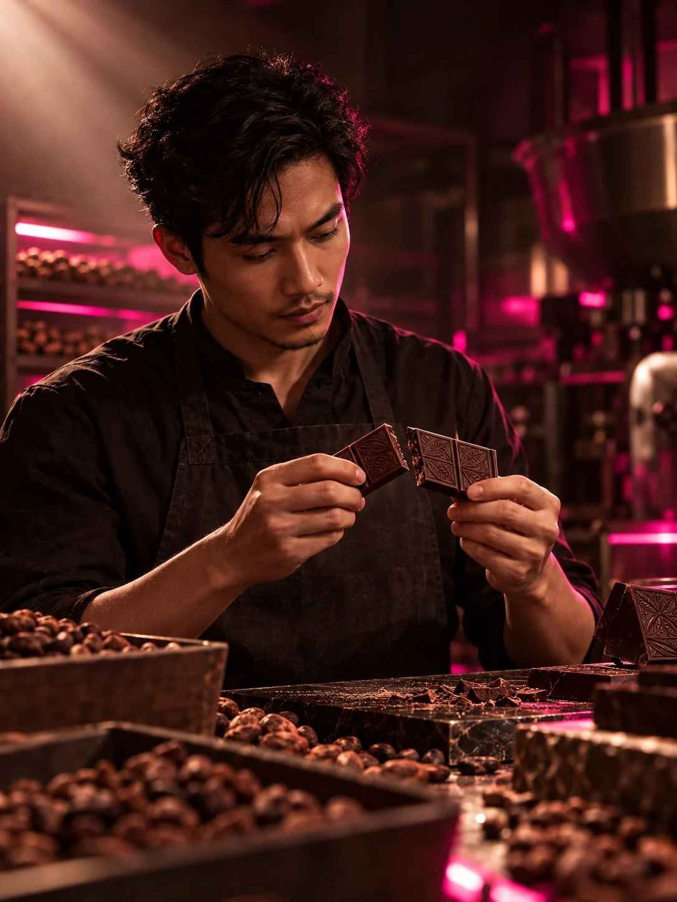

Bộ sưu tập thể nghiệm 2026
CACAO LAB — Thể nghiệm hương vị sô-cô-la thủ công bản địa
Từ những mẻ cacao Việt Nam lên men có kiểm soát, CACAO LAB tạo ra các thanh sô-cô-la có nguồn gốc rõ ràng, cấu trúc vị sắc nét và bao bì được phát triển như một phần của trải nghiệm nếm.

Bốn lát cắt cacao Việt
Mỗi thanh được xây dựng quanh một vùng nguyên liệu, tỷ lệ cacao và nhịp rang riêng, để khác biệt về trái, chua và đắng vẫn được giữ lại thay vì làm phẳng thành một vị sô-cô-la chung.
Xem chi tiết thanh 74% Đắk Lắk
Sô-cô-la đen 74% Single Origin Đắk Lắk
Đậm, khô, kéo dài với tầng hương trái cây sẫm và cacao rang rõ nét.

Sô-cô-la đen 68% Tiền Giang
Cân bằng hơn, chua thanh và có hậu vị trái cây nhiệt đới nhẹ.

Sô-cô-la sữa 55% Mẻ giới hạn
Sữa dịu, cacao vẫn giữ độ sâu; hoàn thiện bằng một chút muối biển để vị không bị ngọt phẳng.

Bộ thanh nếm thử ba sắc độ
Ba thanh nhỏ 55%, 68% và 74% để so sánh trực tiếp cấu trúc vị trong cùng một lần nếm.
Từ hạt đến thanh
Để vùng trồng lên tiếng
Quy trình được thiết kế để bảo toàn khác biệt tự nhiên của từng mẻ hạt, thay vì dùng rang đậm hoặc đường để che đi độ chua, vị trái và cấu trúc cacao.
Đọc câu chuyện của thanh 74%Chọn và lên men
Hạt cacao được tuyển theo mẻ và theo dõi lên men để độ chua phát triển sạch, không gắt.
Rang theo hồ sơ riêng
Nhiệt và thời gian được hiệu chỉnh theo từng vùng nguyên liệu, ưu tiên giữ hương trái tự nhiên.
Nghiền và ổn định cấu trúc
Khối cacao được nghiền mịn, nghỉ đủ thời gian rồi mới đúc thành thanh để vị và kết cấu ổn định.

Thanh tốt không giấu nguồn gốc.
CACAO LAB xem độ chua, vị trái, độ đắng và cả sự khác biệt giữa từng mẻ hạt là dữ liệu cảm quan cần được giữ lại. Bao bì, cách rang và tỷ lệ cacao đều phục vụ cho việc giúp người nếm nhận ra những khác biệt đó.
Khám phá hồ sơ vị 74% Đắk Lắk100% hạt cacao lên men thủ công
Nguồn hạt từ Tiền Giang và Đắk Lắk được theo dõi theo từng mẻ trước khi rang.
Bao bì thể nghiệm phiên bản giới hạn
Mỗi đợt phát hành dùng một hệ đồ họa và vật liệu gói riêng, nhưng không làm lu mờ sản phẩm bên trong.
